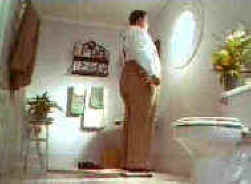

|
Thinner/B,A- |
|
Republic/1996/92m/WS 1.85 |
|
A lean and delicious tale from a Stephen King story, Thinner takes special delight in
reducing its star Robert Burke to a bag of bones. After an accident involving a gypsy visiting his
small New England town, lawyer Billy Halleck finds his life takes a dramatic, horrifying and
unexpected turn.
 |
|
Incredulous losses. ©Republic Home Video |
Burke, a Hal Hartley
regular, carries his varied make-up well and does an excellent job of giving his character a center
of believability. Joe Mantegna provides good support as a Mafioso client.
Thinner is presented as a special edition DVD, providing an
excellent second audio commentary from director Tom Holland and Mantegna and a documentary focused
on the extensive make-up used in the film. Presented in 1.85 aspect ratio only, the widescreen DVD
is quite stunning. THX certified sound adds to the power of the presentation. |
|
|
|

Selections from the feature archive include articles on Akira Kurosawa,
Frank Darabont, Blonde Bimbos, Hollywood
Street Gangs, or Vietnam:
The Hollywood Pariah, and many more...
Robert
A. Harris

Tilting at Hollywood
He's part of the dynamic duo that restored Lawrence
of Arabia, Spartacus, My Fair Lady and Vertigo. Harris rides a white horse into the for the cause
of preserving our film legacy. Click on the image to read more.


DVDPlanet is the DVD
incarnation of legendary laser retailer Ken Crane's. Deep discounts and serious service.

The National Film Preservation Foundation (NFPF) is the nonprofit organization created by the U.S. Congress to save
America's film heritage.

Information on film sound in theaters and home theaters. Lots of helpful information provided in a
handsome interface.

A vast reservoir of DVD information, reviews, the kitchen sink. Check
out their huge DVD database including reviews from many sites.

The
Movie Poster Archive includes extensive poster images from the films of stars like Susan Hayward,
Kirk Douglas, Katharine Hepburn and many more. Our featured star is James Stewart
|